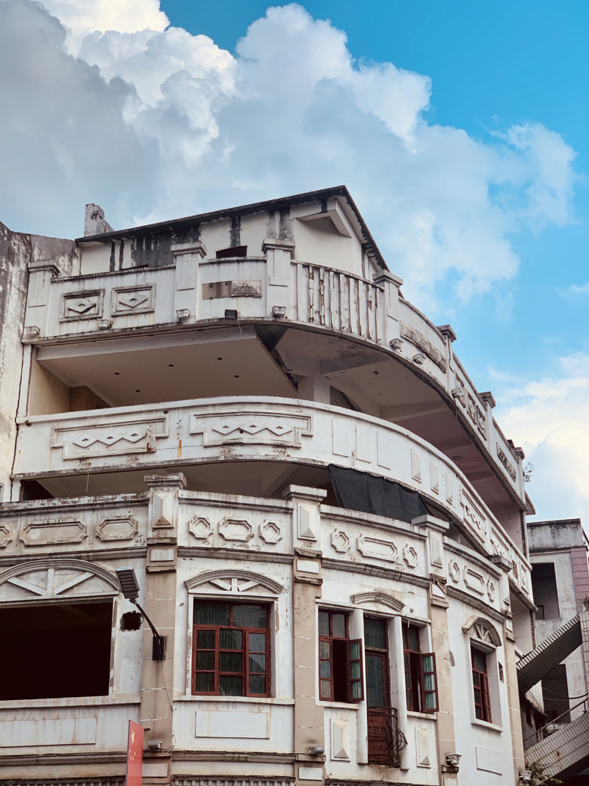
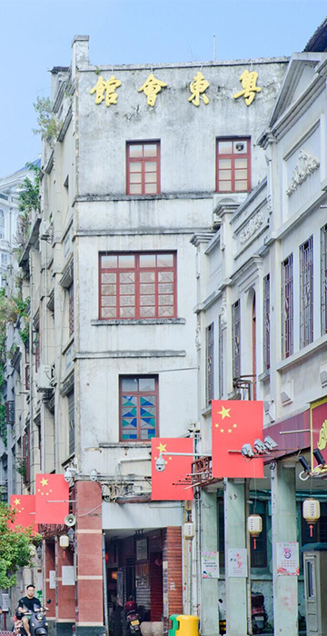
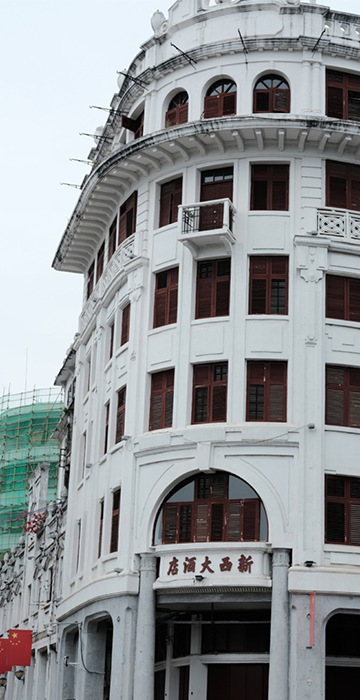
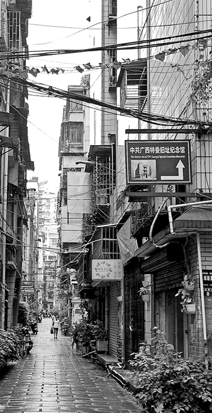

梧州是西江、浔江和桂江三江汇合处，广西784条河、80以上%的水流经梧州，由此产生了独具特色的西江水文化。1897年，梧州被辟为对外通商口岸后，逐渐发展成为珠江流域著名的商埠，骑楼建筑开始在梧州兴起。到了1924年底，梧州发生特大火灾。当局决定“拆城筑路，挖山填塘”将梧州的千年古城墙和城门全部拆除，扩大城区面积，用城砖筑地下水渠、铺砌街道马路，街市规格参照广州。赞成者均自动照办，不愿意的就派兵强制执行。梧州的河东区逐渐成为骑楼城。

粤东会馆促进文化交融在古代，粤商入桂，极大地推动了广西经济社会的发展...
了解更多>>

至今己有60多年历史，是一幢西欧式钢筋水泥七层楼房，其平面布局和立面...

位于民主路维新里东一巷4号。1927年5月，在大革命运动失败的危急关头...
版权所有 © 2021
地址：梧州学院
电子邮箱：1254556725@qq.com